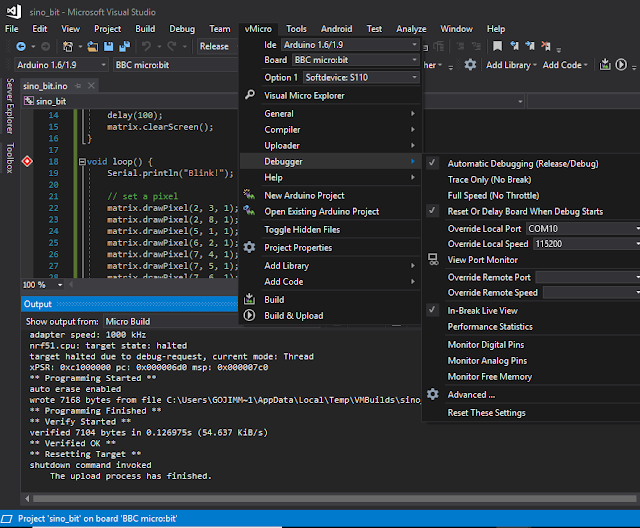

Sino:bit - Arduino, OpenOCD and GDB?
A little while back, I responded to an offer to get a free
Sino:bit from the nice folks at Elecrow
. Well, it was not completely free; I paid $4 for shipping from China, as it was not really practical for me to pick it up. ;)
In case you've not heard - this is the Chinese version of the
BBC Micro:bit - or more precisely, based on the Calliope mini
, which is based on the Micro:bit. Me... I'm in favor of pretty much any technology that may help inspire the next generation of programmers.
Although there are a variety of ways to program this device, I followed along with the
Adafruit instructions to use the Arduino IDE (and/or the VisualMicro add-in
for Visual Studio).
Initial programming was really quite easy. There was one little instruction missing from the Adafruit site. Hopefully they will notice
my tweet
and make the correction. In short, the Arduino HT1632 libraries need to be manually added. So if you see an error like this:
...then simply add the library:
I like to turn on verbose compiling and uploading:
When doing so, a successful upload will look like this:
In particular, I noticed that a
forked version of Open OCD is used to upload the sketch. The first thing that comes to mind when mentioning OpenOCD, is of course GDB
! So I thought I'd see if I could get some single-step debugging working without the need for a potentially expensive hardware debugger.
One line to notice during the verbose compile / upload is the last line of the compile. Note that a unique directory is created for the binaries. In my case: ~\arduino_build_91191
The full line from my Arduino IDE looked like this:
{% include code_header.html %}
C:\Users\gojimmypi\AppData\Local\Arduino15\packages\sandeepmistry\tools\openocd\0.10.0-dev.nrf5/bin/openocd.exe -d2 -f interface/cmsis-dap.cfg -c ; -f target/nrf51.cfg -c program {{ "{{" }}C:\Users\GOJIMM~1\AppData\Local\Temp\arduino_build_91191/sinobit.ino.hex}} verify reset; shutdown;
In order to launch OpenOCD to simply listen, and not upload - minor modifications are needed. Remove everything after and including the "-c program":
{% include code_header.html %}
C:\Users\gojimmypi\AppData\Local\Arduino15\packages\sandeepmistry\tools\openocd\0.10.0-dev.nrf5/bin/openocd.exe -d2 -f interface/cmsis-dap.cfg -c ; -f target/nrf51.cfg
Upon launching this in a DOS window, the resulting output looks like this:
Note that OpenOCD will not exit. It is waiting and listening for a GDB connection.
In my case, I could not find a suitable Windows GDB executable. So I ventured into the land of
WSL - specifically Ubuntu. (I also wrote a little blog on OpenOCD on WSL Ubuntu
). Once a local Ubuntu is installed an operational, GDB can be added:
{% include code_header.html %}
sudo apt-get install gdb
Note that in WSL Ubunto, there's no C:\ drive and the slashes all go in the opposite directions. I went to my specific directory created by the Arduino IDE:
{% include code_header.html %}
cd /mnt/c/Users/gojimmypi/AppData/Local/Temp/arduino_build_91191
GDB is launched like this:
{% include code_header.html %}
gdb -d ./ -d /mnt/c/Users/gojimmypi/AppData/Local/arduino15/packages/sandeepmistry/hardware/nRF5/0.4.0/cores/nRF5 -f sinobit.ino.elf
If all goes well, when GDB is running and accepting commands, if will look something like this in the WSL Ubuntu window:
Due to the oddities of Windows vs Linux, I first ran these commands:
{% include code_header.html %}
# C:\ is found in /mnt/c
set substitute-path c:/ /mnt/c
# There was an odd case problem in Arduino15 vs arduino15
set substitute-path /mnt/c/Users/gojimmypi/AppData/Local/Arduino15/ /mnt/c/Users/gojimmypi/AppData/Local/arduino15/
# make really sure the current directory is used
directory ./
Then connect:
{% include code_header.html %}
target remote localhost:3333
monitor reset init
The resulting GDB window in Ubuntu should look something like this:
The OpenOCD DOS window should have updated, and look something like this, showing the successful connection:
At this point, things are really exciting! Ready to debug? Sadly, no. Typing the GDB "step" command results in the dreaded message:
{% include code_header.html %}
Cannot find bounds of current function
I also tried to use the
VisualMicro add-in
for Visual Studio, no joy there, either:
Although it certainly works to compile and upload code in "release" (no single-step debugging) mode:

@TheFlyingSephyr also suggested trying the Embedded Studio IDE
with the Segger hardware debugger. Perhaps another blog for another day...
On a side note, it might me interesting to peek at the elf file:
{% include code_header.html %}
sudo apt-get install binutils
readelf -a /mnt/c/Users/gojimmypi/AppData/Local/Temp/arduino_build_91191/sinobit.ino.elf
In the end, it seems that you simply
can't get to there from here
when attempting to debug a "soft device". :| If you have any ideas, please leave a comment or send me a message at gmail.
UPDATE: I've had a few replies regarding other debugging options. In particular a
tweet from Tomas indicating that perhaps Mbed tools might help. Indeed there's some interesting info that shows using arm-none-eabi-gdb and pyOCD
. Although I was able to get that toolchain installed and working:
I was not able to actually get single-step debugging working (nor does the Mbed instruction page indicate this is even possible). Note the error:
{% include code_header.html %}
(gdb) step
Warning:
Cannot insert hardware breakpoint 0.
Could not insert hardware breakpoints:You may have requested too many hardware breakpoints/watchpoints.
As show here:
Another more promising method (although considerably more complex and potentially expensive) - would be the
hardware debugging method using JTAG. One of the key things needed here is of course is how to connect the debugger. Many thanks to Elecrow for the prompt reply on twitter
for information on the Sino:bit JTAG pins:
What you cannot immediately see from the silkscreen is that those are pads and not through-holes. Another item on my wish list for version 2! (ok, let's make the proper wish: how about a actual header for JTAG connector!)
I'll create another blog page for the Sino:bit JTAG. My first attempt will be using my
$2 Blue Pill STM32F103 board converted to a Black Magic Probe
.
Overall the Sino:bit seems very cool, despite the problems with OpenOCD and GDB. It would be awesome if some sort of single-step debugging was possible - bit that certainly is not a showstopper. Most people, certainly not beginners - would never even attempt this type of debugging. Other changes I would make would be having a less intensely bright power LED, and making the 12 x 12 grid of LED's multi-color.
Resources, Inspiration, Credits, and Other Links:
Copyright (c) gojimmypi all rights reserved. Blogger Image Move Cleaned: 5/3/2021 1:35:53 PM
{kind=link}
{kind=link}
{kind=link}
{kind=link}
{kind=link}
{kind=link}
{kind=link}
{kind=link}
{kind=link}
{kind=link}
{kind=link}
{kind=link}